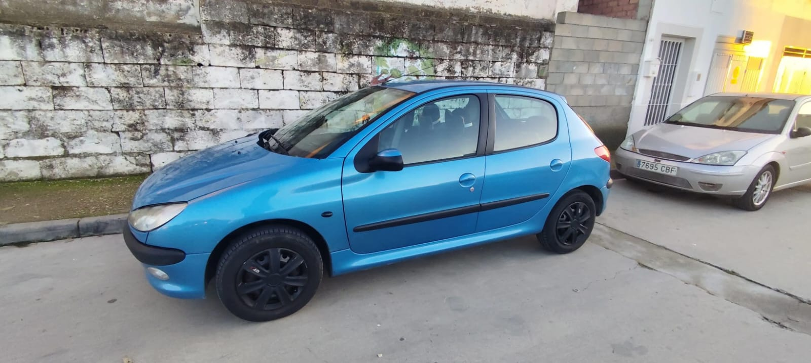
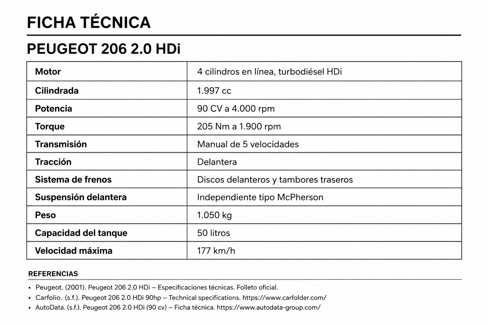

Más que un auto: 12 años de historias sobre ruedas
ML- Juan “solo es un coche pero a la vez tiene muchas historias y muchos buenos y malos momentos vividos”21 mayo 2026 | 17:00 pm

Peugeot 206 2.0 HDi propiedad de Juan . Fotografía tomada por el propietario y cedida para este artículo.
La historia de este Peugeot 206 comenzó mucho antes de que Juan se pusiera al volante, inicia con su hermana quien compro el auto para trabajar, y con el pasar de los años lejos de imaginárselo paso a ser el auto de Juan.
“Este Peugeot ha estado presente en momentos muy importantes. En él terminé una relación y también empecé la actual. He llevado amigos, familia y hasta un perro que un día decidió subirse. Mi abuela y mi tía también viajaron en él muchas veces, y cuando mi abuela falleció, mi coche iba detrás acompañándola en el último trayecto” afirmó Juan
Ante la pregunta. ¿cambiaría su auto?, Juan respondió:” No, aún sigue siendo fiable, barato de mantener y hay demasiada historia”. decidimos hacer una investigación para entender más a detalle cuales son las principales características técnicas que convierten a este auto en uno fiable. Y nos encontramos con un Motor de mecánica sencilla, capaz de superar miles de kilómetros con un mantenimiento adecuado, en la versión 2.0 HDi, dispone de un sistema de inyección diésel, y un consumo contenido que permite optimizar recursos recorriendo varios kilómetros a un costo moderado. asi mismo este modelo incorpora una suspensión delantera robusta de buena absorción, un chasis y estructura rígida que soporta el uso diario.
Por lo cual ese uso diario ha hecho que el Peugeot se convierta en una parte importante de su día a día. Como él mismo asegura: “ha estado conmigo en todas partes: playa, campo, montaña, trabajo o viajes improvisados. Nunca ha sido un coche lujoso ni moderno, pero precisamente ahí está parte de su encanto. Actualmente tiene alrededor de 200.000 kilómetros y mi idea es conservarlo hasta que literalmente no pueda más.”

Los orígenes de la marca Peugeot
El emblema del león de Peugeot sin duda resalta entre todas las marcas, pero ¿saben por qué Peugeot lo eligió como emblema? Todo se remonta a sus inicios en 1810 cuando la familia Peugeot decide Iniciar produciendo herramientas de Acero y molinos de café , se dice que ellos querían representar con el león la resistencia del acero y eligieron el león por su fortaleza y ferocidad, más adelante esta marca inicio con la fabricación de bicicletas, lo que llevo a la creación del primer vehículo a motor de vapor llamado (Peugeot Type 1-1889) y posteriormente el primer automóvil de combustión interna llamado(Peugeot Type 2-1890)
Rally WRC
Muchos desconocen que el Peugeot 206 estuvo en competición, y no precisamente en la versión que transita normalmente en las calles.se trata de la versión WRC que fue creada únicamente para el campeonato mundial de Rally WRC, entre (1999 y 2003) obteniendo tres títulos consecutivos en el Campeón del Mundo de Constructores entre (2000 y 2002), esto ayudo a aumentar la popularidad de este modelo
Una estrella de los videojuegos
Dentro de la industria de los video Juegos El Peugeot 206 hizo su aparición por primera vez en 1999- Gran Turismo 2 y más adelante en Gran Turismo 3, Gran Turismo 4 y Need for Speed, Bajo esta perspectiva un auto que aparezca en un video juego debe ser muy popular y único. no todos pueden decir que su auto está en un juego como Need for Speed.
